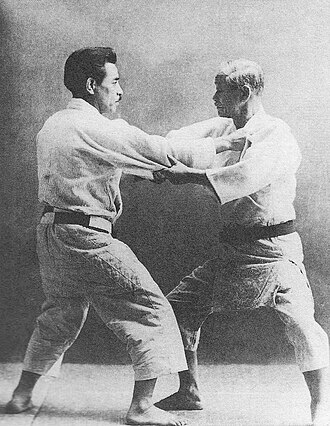

O judo é un deporte, concretamente unha arte marcial xaponesa, que signifia camiño da suavidade,fundada por Jigoro Kano no ano 1882.
Seus principais obxetivos son o fortalecemento físico, o fortalecemento da mente e o espíritu, así como o desarrollo de técnicas de autodefensa.

Conceptos básicos
Judokas: Persoas que practica o judo.
Judogi: Vestimenta usada para practicar judo. Esta componse de:
Chaqueta (Uwagi)
Pantaló branco (zubon ou shitabaki)
Faixa (obi)
Cinturón
Tatami: Alfombras suaves utilizadas como material de chan nas divisións de estilo tradicional xaponés.